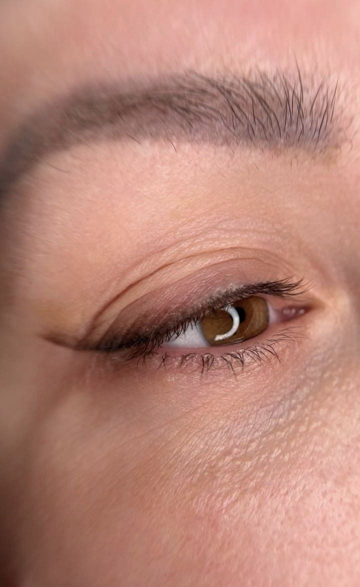
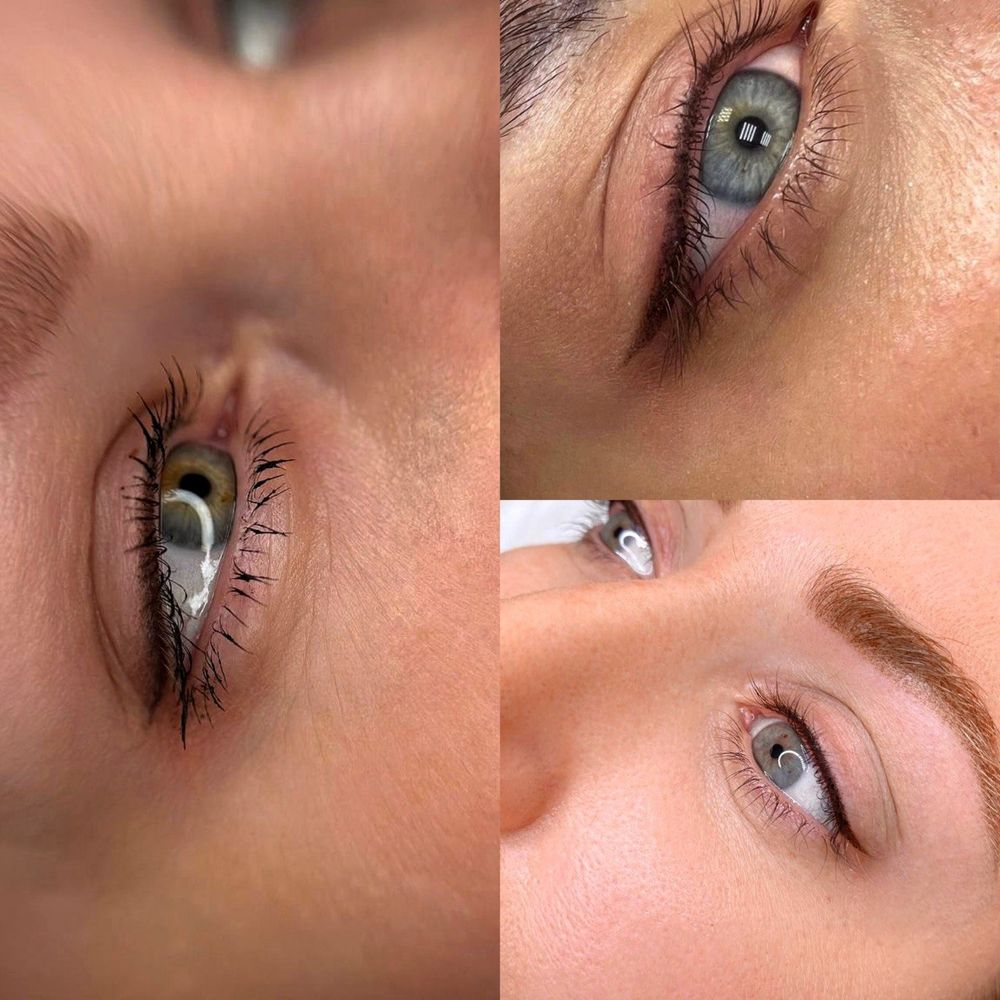

Татуаж век: стрелки и межресничка в Ростове-на-Дону
Стрелка классическая или с растушёвкой и межресничка. Взгляд выразительный с утра, без подводки

Стрелка или межресничка
Стрелка
Классическая или с растушёвкой. Форму подбираю под разрез глаз, в том числе при нависшем веке
7 000 ₽
Межресничка
Без стрелки: пигмент между ресницами. Взгляд выразительнее, ресницы кажутся гуще, а макияжа не видно
5 000 ₽
До и после заживления
Сразу после процедуры стрелка темнее и чётче, чем будет. Через месяц она становится мягкой и не выглядит нарисованной

Цена по этапам
Веки, стрелка
Межресничка
Коррекция стоит дешевле, если прийти в течение 2 месяцев. Позже она стоит как первичная процедура. Я напомню, когда подойдёт срок
Противопоказания: кому нельзя
- беременность
- воспалительные заболевания в острой форме
- герпес в зоне перманента
- псориаз в зоне перманента
- конъюнктивит (для век)
- склонность к келоидным рубцам
- сахарный диабет, инсулинозависимая форма
- низкая свёртываемость крови (гемофилия)
- приём препаратов, разжижающих кровь
- приём ретиноидов
- нарушения иммунной системы, ВИЧ, СПИД
- гепатит B
- онкология
- склеродермия
- эпилепсия
- психические расстройства
- алкогольная или наркотическая интоксикация
Сомневаетесь - напишите мне, разберёмся до записи
Вопросы про веки
Это больно?
Нет. Я использую анестезию, ощущается лёгкое покалывание. Клиентки у меня правда засыпают на процедуре
Сколько держится?
Обычно 1,5-2 года, потом цвет постепенно светлеет. Освежить можно обновлением через 1-1,5 года. Плотные и яркие работы держатся дольше
Межресничка будет заметна?
Нет, она не похожа на макияж. Со стороны кажется, что у вас просто густые ресницы
Зачем нужна коррекция?
Кожа заживает по-разному, и часть пигмента может уйти. Коррекция через 1-2 месяца закрепляет цвет и доводит форму
Сколько длится процедура?
1,5-2 часа на любую зону. Сначала рисую эскиз и показываю цвет, начинаем, когда вам всё понятно
Перманент только для молодых?
Нет. Я работаю с девушками и женщинами любого возраста. Перманент помогает и тогда, когда брови поредели или контур губ стал менее чётким
Напишите мне, можно сразу с фото. Подскажу технику и цвет, подберём удобный день. Приём по записи, 30-40 минут от центра Ростова
Записаться